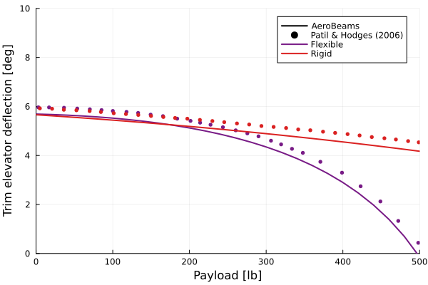

Trimming a flying-wing HALE
This example illustrates how to set up a trim analysis of an aircraft in free flight. For that we take a model of the Helios aircraft, a 75 meters wingspan flying-wing HALE. This aircraft model was described in Patil and Hodges:
 Flying-wing HALE model geometry by Patil and Hodges
Flying-wing HALE model geometry by Patil and Hodges
 Flying-wing properties by Patil and Hodges
Flying-wing properties by Patil and Hodges
The code for this example is available here.
Problem setup
Let's begin by setting up the variables of our problem. We select the airfoil for the wing, and the optional flags to include the vertical beam pods and of setting the payload on the wing. Our set up matches that of Patil and Hodges. We will investigate the longitudinal trim of the aircraft at both rigid and elastic (nominal) configurations, using the payload at the center station as the varying parameter.
using AeroBeams, DelimitedFiles
# Wing airfoil
wingAirfoil = deepcopy(HeliosWingAirfoil)
# Flag to include beam pods
beamPods = true
# Flag to set payload on wing
payloadOnWing = false
# Aerodynamic solver
aeroSolver = Indicial()
# Set NR system solver
relaxFactor = 0.5
NR = create_NewtonRaphson(ρ=relaxFactor)
# Airspeed (40 ft/s) [m]
U = 40*0.3048
# Set stiffness factor and payload ranges
λRange = [1,50]
PRange = collect(0:20:500)
# Initialize outputs
problem = Array{TrimProblem}(undef,length(λRange),length(PRange))
trimAoA = Array{Float64}(undef,length(λRange),length(PRange))
trimThrust = Array{Float64}(undef,length(λRange),length(PRange))
trimδ = Array{Float64}(undef,length(λRange),length(PRange))Solving the problem
At this point we can sweep the stiffness factor and payload vectors to find the trim solution at each value.
# Sweep stiffness factor
for (i,λ) in enumerate(λRange)
# Sweep payload
for (j,P) in enumerate(PRange)
# Model
helios,midSpanElem,_ = create_Helios(aeroSolver=aeroSolver,beamPods=beamPods,wingAirfoil=wingAirfoil,payloadOnWing=payloadOnWing,stiffnessFactor=λ,payloadPounds=P,airspeed=U,δIsTrimVariable=true,thrustIsTrimVariable=true)
# Set initial guess solution as previous known solution
x0 = (j==1) ? zeros(0) : problem[i,j-1].x
# Create and solve trim problem
problem[i,j] = create_TrimProblem(model=helios,systemSolver=NR,x0=x0)
solve!(problem[i,j])
# Trim results
trimAoA[i,j] = problem[i,j].aeroVariablesOverσ[end][midSpanElem].flowAnglesAndRates.αₑ*180/π
trimThrust[i,j] = problem[i,j].x[end-1]*problem[i,j].model.forceScaling
trimδ[i,j] = problem[i,j].x[end]*180/π
end
endPost-processing
The first post-processing step is to load the reference data by Patil and Hodges.
# Load reference data
αFlexibleRef = readdlm(pkgdir(AeroBeams)*"/test/referenceData/Helios/trim_AoA_flexible.txt")
αRigidRef = readdlm(pkgdir(AeroBeams)*"/test/referenceData/Helios/trim_AoA_rigid.txt")
δFlexibleRef = readdlm(pkgdir(AeroBeams)*"/test/referenceData/Helios/trim_delta_flexible.txt")
δRigidRef = readdlm(pkgdir(AeroBeams)*"/test/referenceData/Helios/trim_delta_rigid.txt")
TRef = readdlm(pkgdir(AeroBeams)*"/test/referenceData/Helios/trim_thrust.txt")We now plot the trim outputs as functions of the payload, for both rigid and elastic configurations. The agreement with the reference is very good. Notice that the thrust (per motor) remains almost constant, for both rigid and flexible aircraft, because the drag slope with flap deflection is assumed null ($c_{d_\delta} = 0$) and induced drag is neglected, so that only the parasite drag ($c_{d_0}$) component is present.
# Plot configurations
using Plots, ColorSchemes
gr()
colors = get(colorschemes[:rainbow], LinRange(0, 1, length(λRange)))
labels = ["Flexible" "Rigid"]
lw = 2
ms = 3
msw = 0
# Trim root angle of attack
plt1 = plot(xlabel="Payload [lb]", ylabel="Trim root AoA [deg]", xlims=[0,500], ylims=[0,5])
plot!([NaN], [NaN], c=:black, lw=lw, label="AeroBeams")
scatter!([NaN], [NaN], c=:black, ms=ms, label="Patil & Hodges (2006)")
for (i,λ) in enumerate(λRange)
plot!(PRange, trimAoA[i,:], c=colors[i], lw=lw, label=labels[i])
if i==1
scatter!(αFlexibleRef[1,:], αFlexibleRef[2,:], c=colors[i], ms=ms, msw=msw, label=false)
else
scatter!(αRigidRef[1,:], αRigidRef[2,:], c=colors[i], ms=ms, msw=msw, label=false)
end
end
# Trim elevator deflection
plt2 = plot(xlabel="Payload [lb]", ylabel="Trim elevator deflection [deg]", xlims=[0,500], ylims=[0,10])
plot!([NaN], [NaN], c=:black, lw=lw, label="AeroBeams")
scatter!([NaN], [NaN], c=:black, ms=ms, label="Patil & Hodges (2006)")
for (i,λ) in enumerate(λRange)
plot!(PRange, trimδ[i,:], c=colors[i], lw=lw, label=labels[i])
if i==1
scatter!(δFlexibleRef[1,:], δFlexibleRef[2,:], c=colors[i], ms=ms, msw=msw, label=false)
else
scatter!(δRigidRef[1,:], δRigidRef[2,:], c=colors[i], ms=ms, msw=msw, label=false)
end
end
# Trim thrust per motor
plt3 = plot(xlabel="Payload [lb]", ylabel="Trim thrust per motor [N]", xlims=[0,500], ylims=[0,60])
plot!([NaN], [NaN], c=:black, lw=lw, label="AeroBeams")
scatter!([NaN], [NaN], c=:black, ms=ms, label="Patil & Hodges (2006)")
for (i,λ) in enumerate(λRange)
plot!(PRange, trimThrust[i,:], c=colors[i], lw=lw, label=labels[i])
scatter!(TRef[1,:], TRef[2,:], c=colors[i], ms=ms, msw=msw, label=false)
end
This page was generated using Literate.jl.